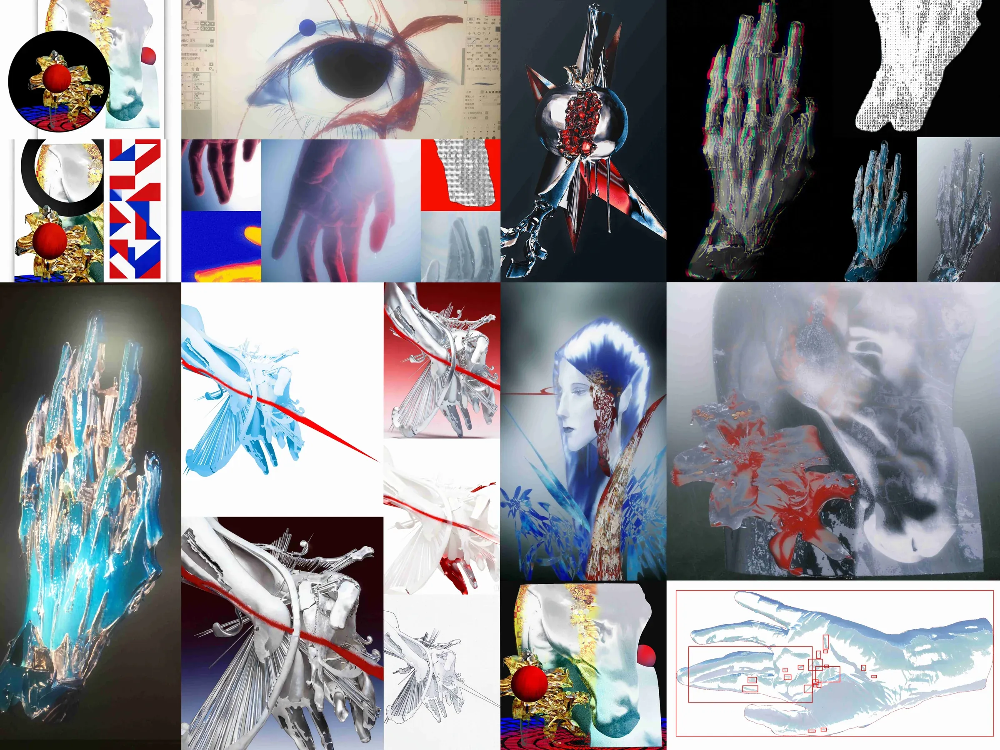

作品场 · The Field
拖动可重排 · 悬停看名 · 点击展开

The Grammar of Fluid
七个系列，二十件作品。从 3D 渲染的百合花白马到流体解构的人像肖像， 从哥特教堂的暗红余烬到羊羊眼的彩色凝视， 从蓝色深处的流体飞鸟到红框切割的注视实验—— 每件作品都是一次对"失控"与"生成"的视觉追问。 流体不可控的物理性与数字精确的算法性在此交织， 构成一组关于感知、身份与存在的视觉拓扑。
Seven series, twenty works. From the 3D-rendered lily white horse to the fluid-deconstructed portraits, from the crimson embers of a Gothic cathedral to the chromatic gaze of a solitary eye, from fluid birds emerging in deep blue to red-framed experiments of looking — each piece is a visual inquiry into loss of control and emergence. The uncontrollable physicality of fluid intertwines with algorithmic precision, forming a visual topology of perception, identity, and being.